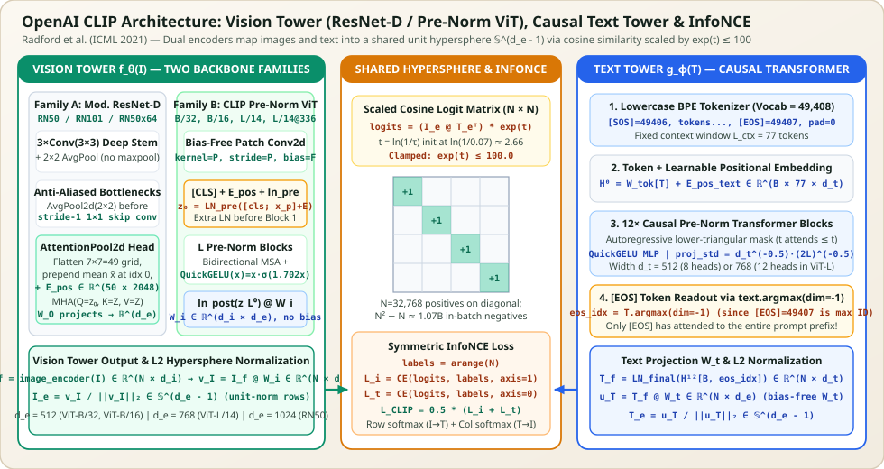

CLIP Architecture from First Principles: Dual-Tower Alignment, Modified ResNet-D (AttentionPool2d), Pre-Norm ViT (ln_pre), Causal [EOS] Text Transformer & Symmetric InfoNCE
OpenAI's CLIP (Contrastive Language–Image Pre-training, Radford et al., ICML 2021) established the canonical dual-tower architecture for modern multimodal representation learning. Instead of fusing image patches and text tokens inside a heavy cross-attention encoder or training an autoregressive decoder to predict captions word-by-word, CLIP trains two completely independent encoders—a Vision Tower $f_\theta(I)$ and a Causal Text Tower $g_\phi(T)$—that meet only at the very last layer through bias-free linear projections $W_i, W_t$ and $\ell_2$ normalization onto a shared unit hypersphere $\mathbb{S}^{d_e - 1}$. This article dissects the complete end-to-end architecture of CLIP: every layer of its Modified ResNet-D and Pre-Norm ViT vision towers, its 12-layer causal BPE text tower pooled at [EOS], its distributed $32{,}768 \times 32{,}768$ symmetric InfoNCE objective, and a complete PyTorch implementation.


AttentionPool2d and Pre-Norm ViT + ln_pre), the 12-layer Causal BPE Text Tower pooled at [EOS], and the $N \times N$ symmetric InfoNCE contrastive alignment head.1. Why a Dual-Tower Architecture? Decoupled $O(N)$ Encoding + $O(N^2 d_e)$ Dot Products
Before CLIP, vision–language models typically fell into two architectural paradigms:
- Cross-Modal Fusion Encoders (e.g., ViLBERT, UNITER, LXMERT): Concatenate visual region features and text tokens into a single Transformer with cross-attention layers. Scoring $N$ images against $N$ texts requires $N^2$ full Transformer forward passes—making million-scale zero-shot retrieval or $N = 32{,}768$ contrastive batches computationally impossible.
- Autoregressive Caption Generators (e.g., VirTex, ICMLM): Pass visual features into a causal Transformer decoder trained with teacher-forced cross-entropy to predict exact word sequences. As Radford et al. showed in Figure 2 of the CLIP paper, predicting exact words wastes model capacity on phrasing, punctuation, and syntax, requiring **$12\times$ more training compute** than contrastive alignment to reach the same zero-shot ImageNet accuracy.
CLIP's Dual-Tower (Bi-Encoder) Architecture solves both bottlenecks simultaneously:
- $O(N)$ Independent Tower Forward Passes: In a minibatch of $N$ image–text pairs $\{(I_m, T_m)\}_{m=1}^N$, the Vision Tower runs $N$ times and the Text Tower runs $N$ times. All $N^2$ pairwise similarities are computed via a single matrix multiplication $\hat{\mathbf{I}} \hat{\mathbf{T}}^\top \in \mathbb{R}^{N \times N}$ at the output layer!
- Zero-Cost Offline Caching for Zero-Shot Transfer: At inference time, the text embeddings $\{\hat{\mathbf{t}}_c\}_{c=1}^K$ for $K$ class prompts (or millions of catalog documents) can be precomputed once and cached as a static linear classifier matrix $W_{\text{zs}} \in \mathbb{R}^{d_e \times K}$. Classifying a new image requires only a single vision forward pass and one matrix–vector product $\hat{\mathbf{i}}^\top W_{\text{zs}}$.
2. Vision Tower Family A: Modified ResNet-D & AttentionPool2d
OpenAI trained nine CLIP checkpoints in total: five convolutional models (RN50, RN101, RN50x4, RN50x16, RN50x64) and four Vision Transformer models. Rather than using a vanilla He et al. (2015) ResNet, CLIP's `ModifiedResNet` introduces three critical architectural upgrades:
2.1 ResNet-D Deep Stem & Anti-Aliased Blur Pooling
- Three-Layer $3 \times 3$ Stem (He et al., 2019): Replaces the standard $7 \times 7$ stride-2 stem convolution and $3 \times 3$ stride-2 `MaxPool2d` with three stacked $3 \times 3$ convolutions (widths $C/2 \to C/2 \to C$, where $C = 64$, with the first convolution using stride 2) followed by a $2 \times 2$ stride-2 `AvgPool2d`.
- Anti-Aliased Downsampling (Zhang, 2019): In a standard ResNet bottleneck block that downsamples spatial resolution by $2\times$, a $1 \times 1$ convolution with `stride=2` discards $75\%$ of its input pixels, violating the Nyquist sampling theorem and breaking shift invariance. In CLIP's `Bottleneck`, every convolution uses `stride=1`, and spatial downsampling is performed via an explicit $2 \times 2$ stride-2 `nn.AvgPool2d(2)` placed after the $3 \times 3$ conv on the main branch and before the $1 \times 1$ conv on the residual skip connection.
2.2 Replacing Global Average Pooling with AttentionPool2d
The most important modification in CLIP's ResNet family happens at the final stage. A standard ResNet-50 outputs a spatial feature map $\mathbf{X} \in \mathbb{R}^{B \times 2048 \times 7 \times 7}$ (for $224 \times 224$ input) and collapses the $7 \times 7 = 49$ spatial locations via unweighted global average pooling $\bar{\mathbf{x}} = \frac{1}{49}\sum_{r,c} \mathbf{X}_{:, r, c}$. Unweighted spatial averaging treats background sky/grass pixels identically to the foreground object and destroys spatial relationships.
CLIP replaces global average pooling with a Transformer-style QKV cross-attention pooling head called AttentionPool2d:
- Flatten the spatial feature map $\mathbf{X} \in \mathbb{R}^{B \times C \times H_f \times W_f}$ into $N_f = H_f W_f$ spatial tokens $\mathbf{X}_{\text{flat}} \in \mathbb{R}^{B \times N_f \times C}$ (for RN50 at $224^2$, $N_f = 7 \times 7 = 49$, $C = 2048$).
- Compute the global spatial mean $\bar{\mathbf{x}} = \frac{1}{N_f}\sum_{p=1}^{N_f} \mathbf{X}_{\text{flat}}[:, p, :] \in \mathbb{R}^{B \times 1 \times C}$ and prepend it at index $0$, forming a sequence of $N_f + 1 = 50$ tokens.
- Add a learnable 2D positional embedding table $\mathbf{E}_{\text{pos}} \in \mathbb{R}^{(N_f + 1) \times C}$:
$$\mathbf{Z} = \begin{bmatrix} \bar{\mathbf{x}} \\ \mathbf{X}_{\text{flat}} \end{bmatrix} + \mathbf{E}_{\text{pos}} \in \mathbb{R}^{B \times (N_f + 1) \times C}$$
- Apply a single Multi-Head Attention ($\operatorname{MHA}$) layer where the query is only token $0$ ($\mathbf{Q} = \mathbf{Z}[:, 0:1, :] W_Q \in \mathbb{R}^{B \times 1 \times C}$), while keys and values span all $N_f + 1$ tokens ($\mathbf{K} = \mathbf{Z} W_K$, $\mathbf{V} = \mathbf{Z} W_V$). The MHA output projection $W_O \in \mathbb{R}^{C \times d_e}$ projects directly from $C = 2048$ to the shared multimodal embedding dimension $d_e = 1024$!
3. Vision Tower Family B: Pre-Norm Vision Transformer (ViT) with ln_pre
OpenAI's highest-performing CLIP models (ViT-B/32, ViT-B/16, ViT-L/14, and ViT-L/14@336px) replace the ResNet backbone with a Pre-Norm Vision Transformer. (See Chapter 2 of the ViT Series: The Vision Transformer Used in CLIP for the full 6-modification diff against Dosovitskiy et al., 2020.) Given an RGB image $\mathbf{I} \in \mathbb{R}^{B \times 3 \times H \times W}$ and patch size $P \in \{32, 16, 14\}$:
4. The Text Tower: 12-Layer Causal BPE Transformer Pooled at [EOS]
Regardless of whether the Vision Tower is a Modified ResNet or a ViT, CLIP pairs it with a 12-layer Pre-Norm Causal Transformer (`Transformer(width=d_t, layers=12, heads=d_t//64)`) modeled after GPT-2 (Radford et al., 2019):
- Lowercase Byte-Pair Encoding (BPE) Tokenizer: Uses a vocabulary of $49{,}152$ subword merges plus two special bracket tokens:
[SOS](Start of Sequence) = token ID $49{,}406$[EOS](End of Sequence) = token ID $49{,}407$- Zero-padding = token ID $0$ up to a fixed context length $L_{\text{ctx}} = 77$.
- Causal Self-Attention Mask ($77 \times 77$): Even though the Text Tower is an encoder producing a single vector per caption, OpenAI applies an additive upper-triangular causal mask $M_{uv} = 0$ if $u \ge v$ else $-\infty$ inside every self-attention block:
$$\mathbf{H}_0 = W_{\text{tok}}[\mathbf{T}] + \mathbf{E}_{\text{pos}}^{\text{text}} \in \mathbb{R}^{B \times 77 \times d_t}, \qquad \mathbf{H}_\ell = \operatorname{CausalBlock}_\ell(\mathbf{H}_{\ell-1}), \quad \ell = 1, \dots, 12$$Why use a causal mask instead of a BERT-style bidirectional mask? First, causal masking prevents information leakage from padding positions after `[EOS]` without requiring a per-sample padding mask tensor. Second, it makes the text tower architecture directly compatible with autoregressive language modeling initializations and extensions (such as CoCa).
- Pooling at `[EOS]` via `text.argmax(dim=-1)`: Because of the causal mask, token $0$ (`[SOS]`) only sees itself, whereas the `[EOS]` token at index $e_b$ is the first token that has attended to the entire prompt prefix $(0, 1, \dots, e_b)$! Furthermore, because `[EOS]` has the largest token ID ($49{,}407$) in the entire vocabulary, OpenAI's implementation finds the exact position of `[EOS]` for every sequence in the batch with a single `text.argmax(dim=-1)` call:
$$\mathbf{h}_T^{(b)} = \operatorname{LN}_{\text{final}}(\mathbf{H}_{12})\!\left[b,\; \arg\max_{t} T_{b, t},\; :\right] \in \mathbb{R}^{d_t}, \qquad \mathbf{u}_T = \mathbf{h}_T W_t \in \mathbb{R}^{B \times d_e}, \qquad \hat{\mathbf{t}} = \frac{\mathbf{u}_T}{\|\mathbf{u}_T\|_2} \in \mathbb{S}^{d_e - 1}$$
5. Unit-Hypersphere Geometry, Learnable Temperature $\exp(t)$ & Distributed Symmetric InfoNCE
Once a minibatch of $N$ image–text pairs is encoded and $\ell_2$-normalized into $\hat{\mathbf{I}} \in \mathbb{R}^{N \times d_e}$ and $\hat{\mathbf{T}} \in \mathbb{R}^{N \times d_e}$ (where every row has $\|\hat{\mathbf{i}}_m\|_2 = \|\hat{\mathbf{t}}_n\|_2 = 1$), their matrix product $\hat{\mathbf{I}} \hat{\mathbf{T}}^\top \in [-1, 1]^{N \times N}$ contains all $N^2$ pairwise cosine similarities.
Because raw cosine similarities lie in $[-1, 1]$, applying a standard softmax $\frac{\exp(s_{mm})}{\sum_n \exp(s_{mn})}$ with temperature $\tau = 1$ cannot produce sharp probabilities: even if the true match has $s_{mm} = 1.0$ and all $N-1 = 32{,}767$ negatives have $s_{mn} = 0.0$, the positive probability would be at most $\frac{e^1}{e^1 + 32767 \cdot e^0} \approx 0.000083$!
Therefore, CLIP multiplies the cosine similarities by a learnable inverse temperature scalar $\exp(t) = 1/\tau$, where $t = \texttt{logit\_scale} \in \mathbb{R}$ is parameterized in log-space, initialized to $\ln(1/0.07) \approx 2.6593$ ($\exp(t) \approx 14.29$), and clamped in-place so $\exp(t) \le 100.0$ ($t \le \ln(100) \approx 4.6052$):
How Distributed Contrastive `AllGather` Works Across $D$ GPUs
A single GPU cannot hold the intermediate activations for $N = 32{,}768$ images and texts simultaneously. Instead, each of the $D$ GPUs (e.g., $D = 256$ GPUs with local batch size $B_{\text{local}} = 128$) runs the Vision Tower and Text Tower forward pass on its local shard $(\hat{\mathbf{I}}_d, \hat{\mathbf{T}}_d) \in \mathbb{R}^{128 \times d_e}$, then performs an `all_gather` of the compact $d_e$-dimensional unit vectors across all $D$ ranks to assemble the global $\hat{\mathbf{I}}_{\text{global}}, \hat{\mathbf{T}}_{\text{global}} \in \mathbb{R}^{32768 \times d_e}$. Crucially, because `torch.distributed.all_gather` does not propagate gradients by default, rank $d$ overwrites slice $d$ of the gathered tensor with its local tensor (`gathered_I[rank] = local_I`) so autograd flows back into rank $d$'s local Vision and Text encoders!
6. Complete Architectural Table of All 9 Official OpenAI CLIP Models
| Model Name | Input Resolution | Vision Backbone ($L_i$, Width $d_i$) | Text Tower ($L_t = 12$, Width $d_t$, Heads) | Joint Dim $d_e$ | Zero-Shot ImageNet Top-1 |
|---|---|---|---|---|---|
| CLIP RN50 | $224 \times 224$ | ResNet-50D ($[3,4,6,3]$, $d_i=2048$, $7\times 7$ AttentionPool2d) | $L_t=12, d_t=512, H_t=8$ | $1024$ | $59.6\%$ |
| CLIP RN101 | $224 \times 224$ | ResNet-101D ($[3,4,23,3]$, $d_i=2048$, $7\times 7$ AttentionPool2d) | $L_t=12, d_t=512, H_t=8$ | $512$ | $62.2\%$ |
| CLIP RN50x4 | $288 \times 288$ | Scaled ResNet-D ($[4,6,10,6]$, $d_i=2560$, $9\times 9$ AttentionPool2d) | $L_t=12, d_t=640, H_t=10$ | $640$ | $66.2\%$ |
| CLIP RN50x16 | $384 \times 384$ | Scaled ResNet-D ($[6,8,18,8]$, $d_i=3072$, $12\times 12$ AttentionPool2d) | $L_t=12, d_t=768, H_t=12$ | $768$ | $70.7\%$ |
| CLIP RN50x64 | $448 \times 448$ | Scaled ResNet-D ($[3,15,36,10]$, $d_i=4096$, $14\times 14$ AttentionPool2d) | $L_t=12, d_t=1024, H_t=16$ | $1024$ | $73.6\%$ |
| CLIP ViT-B/32 | $224 \times 224$ | Pre-Norm ViT ($P=32$, $L_i=12, d_i=768, H_i=12$, $50$ tokens) | $L_t=12, d_t=512, H_t=8$ | $512$ | $63.2\%$ |
| CLIP ViT-B/16 | $224 \times 224$ | Pre-Norm ViT ($P=16$, $L_i=12, d_i=768, H_i=12$, $197$ tokens) | $L_t=12, d_t=512, H_t=8$ | $512$ | $68.6\%$ |
| CLIP ViT-L/14 | $224 \times 224$ | Pre-Norm ViT ($P=14$, $L_i=24, d_i=1024, H_i=16$, $257$ tokens) | $L_t=12, d_t=768, H_t=12$ | $768$ | $75.5\%$ |
| CLIP ViT-L/14@336px | $336 \times 336$ | Pre-Norm ViT ($P=14$, $L_i=24, d_i=1024, H_i=16$, $577$ tokens) | $L_t=12, d_t=768, H_t=12$ | $768$ | $76.2\%$ |
7. Complete End-to-End PyTorch Implementation of OpenAI CLIP
import numpy as np
import torch
import torch.nn as nn
import torch.nn.functional as F
class AttentionPool2d(nn.Module):
"""Multi-head QKV cross-attention pooling head used in CLIP's ModifiedResNet."""
def __init__(self, spacial_dim: int, embed_dim: int, num_heads: int, output_dim: int = None):
super().__init__()
self.positional_embedding = nn.Parameter(
torch.randn(spacial_dim ** 2 + 1, embed_dim) / embed_dim ** 0.5
)
self.k_proj = nn.Linear(embed_dim, embed_dim)
self.q_proj = nn.Linear(embed_dim, embed_dim)
self.v_proj = nn.Linear(embed_dim, embed_dim)
self.c_proj = nn.Linear(embed_dim, output_dim or embed_dim)
self.num_heads = num_heads
def forward(self, x: torch.Tensor) -> torch.Tensor:
# x: [B, C, H, W] -> flatten spatial to [HW, B, C]
x = x.flatten(start_dim=2).permute(2, 0, 1)
# Prepend global spatial mean at index 0 -> [HW + 1, B, C]
x = torch.cat([x.mean(dim=0, keepdim=True), x], dim=0)
x = x + self.positional_embedding[:, None, :].to(x.dtype)
# Query is ONLY token 0 (the global mean); keys & values are all HW + 1 tokens
x, _ = F.multi_head_attention_forward(
query=x[:1], key=x, value=x,
embed_dim_to_check=x.shape[-1],
num_heads=self.num_heads,
q_proj_weight=self.q_proj.weight,
k_proj_weight=self.k_proj.weight,
v_proj_weight=self.v_proj.weight,
in_proj_weight=None,
in_proj_bias=torch.cat([self.q_proj.bias, self.k_proj.bias, self.v_proj.bias]),
bias_k=None, bias_v=None, add_zero_attn=False,
dropout_p=0.0,
out_proj_weight=self.c_proj.weight,
out_proj_bias=self.c_proj.bias,
use_separate_proj_weight=True,
training=self.training,
need_weights=False,
)
return x.squeeze(0) # [B, output_dim]
class CLIPDualTower(nn.Module):
"""
End-to-end CLIP Dual-Tower wrapper combining Vision Tower, Causal Text Tower,
learnable clamped logit_scale, and symmetric InfoNCE loss.
"""
def __init__(
self,
vision_encoder: nn.Module,
text_transformer: nn.Module,
vocab_size: int = 49408,
context_length: int = 77,
transformer_width: int = 512,
embed_dim: int = 512,
):
super().__init__()
self.visual = vision_encoder
self.transformer = text_transformer
self.context_length = context_length
self.token_embedding = nn.Embedding(vocab_size, transformer_width)
self.positional_embedding = nn.Parameter(torch.empty(context_length, transformer_width))
self.ln_final = nn.LayerNorm(transformer_width)
self.text_projection = nn.Parameter(torch.empty(transformer_width, embed_dim))
# Initialized at ln(1 / 0.07) ≈ 2.65926
self.logit_scale = nn.Parameter(torch.ones([]) * np.log(1 / 0.07))
def encode_image(self, image: torch.Tensor) -> torch.Tensor:
x = self.visual(image)
return F.normalize(x, dim=-1)
def encode_text(self, text: torch.Tensor) -> torch.Tensor:
# text: [B, 77] where [EOS]=49407 is always the maximum token ID in each row
x = self.token_embedding(text) + self.positional_embedding
x = self.transformer(x) # 12 causal-masked Pre-Norm blocks
x = self.ln_final(x)
# Select [EOS] token features via text.argmax(dim=-1) and project to d_e
eos_features = x[torch.arange(x.shape[0], device=x.device), text.argmax(dim=-1)]
text_embeds = eos_features @ self.text_projection
return F.normalize(text_embeds, dim=-1)
def forward(self, image: torch.Tensor, text: torch.Tensor):
image_features = self.encode_image(image)
text_features = self.encode_text(text)
# Clamp exp(t) <= 100.0 for numerical stability
logit_scale = self.logit_scale.exp().clamp(max=100.0)
logits_per_image = logit_scale * (image_features @ text_features.t())
logits_per_text = logits_per_image.t()
labels = torch.arange(image.shape[0], device=image.device)
loss_i = F.cross_entropy(logits_per_image, labels)
loss_t = F.cross_entropy(logits_per_text, labels)
loss = 0.5 * (loss_i + loss_t)
return logits_per_image, logits_per_text, lossContinue Exploring
- Next Architecture Deep Dive: SigLIP & SigLIP 2 Architecture (`SoViT-400m/14`, MAP Head & Pairwise Sigmoid Loss) — see how Google replaced CLIP's `[CLS]` token with Multihead Attention Pooling (MAP) and replaced global Softmax InfoNCE with $N^2$ independent pairwise sigmoids.
- The Vision Transformer (ViT) Used in CLIP — detailed 6-point comparison between Dosovitskiy et al. (2020) supervised ViT and OpenAI's CLIP ViT.
- Full 6-Part CLIP Series (under Deep Learning → Architectures → CLIP) — includes data-efficiency scaling curves ($12\times$), OneNote derivations, 80-template prompt ensembling, and the Modality Gap on $\mathbb{S}^{d_e-1}$.